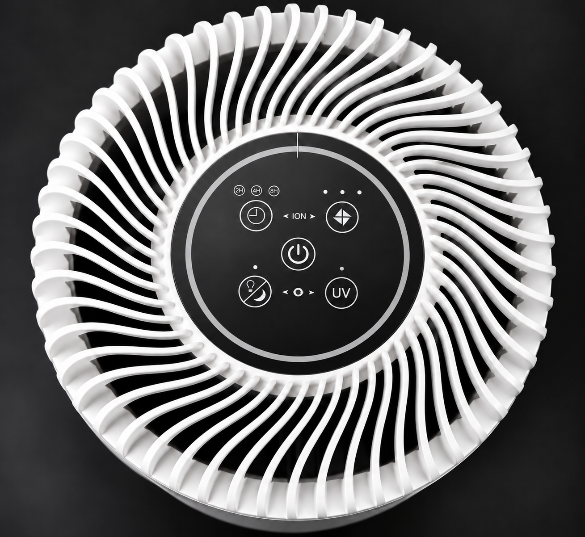
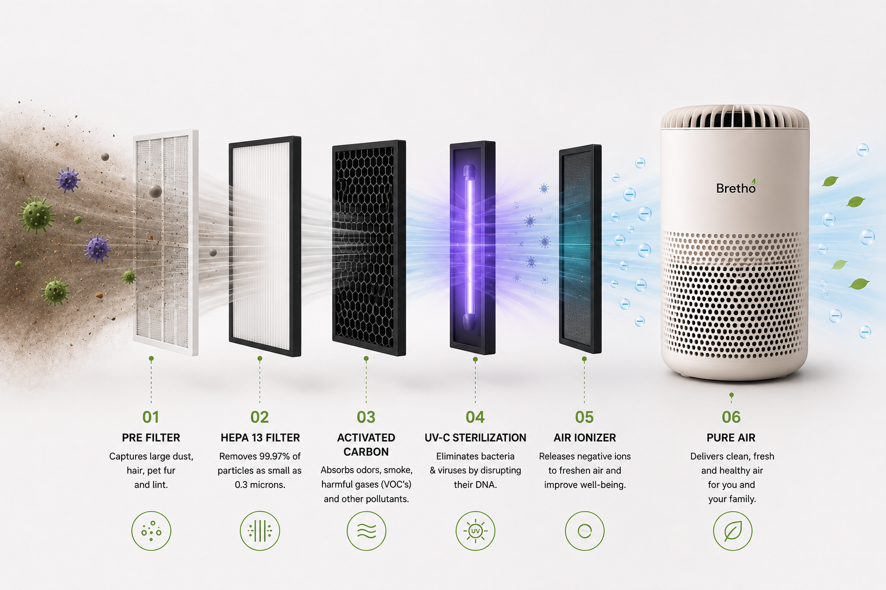

01
Pre-filter
Designed to catch larger dust, hair and lint.
A three-stage filtration path plus UV-C and negative-ion functions, presented through the actual product controls and packaging.
The product packaging identifies pre-filter, HEPA 13 and activated carbon as the filter stages. UV-C and the air ionizer sit alongside them as additional technologies.
Designed to catch larger dust, hair and lint.
Fine-particle filtration layer described on the packaging.
For odours and gases, according to the packaging description.
Safety documentation identifies a 254nm emitter.
Negative-ion technology with dedicated control.

The supplied product photograph shows dedicated controls for fan speed, UV, ionizer, sleep and timer functions.
The selected unit is documented with a 100–240V, 50–60Hz input supply configuration and 12V DC output, with a 10.5W purifier rating.
